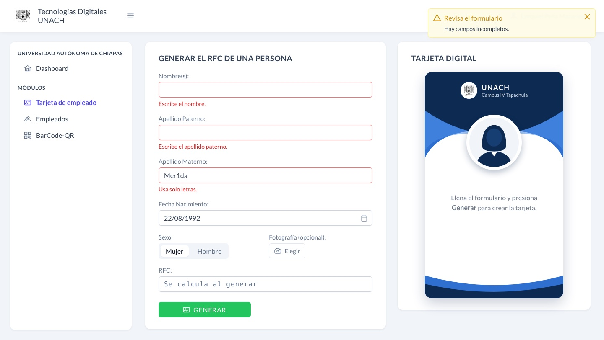
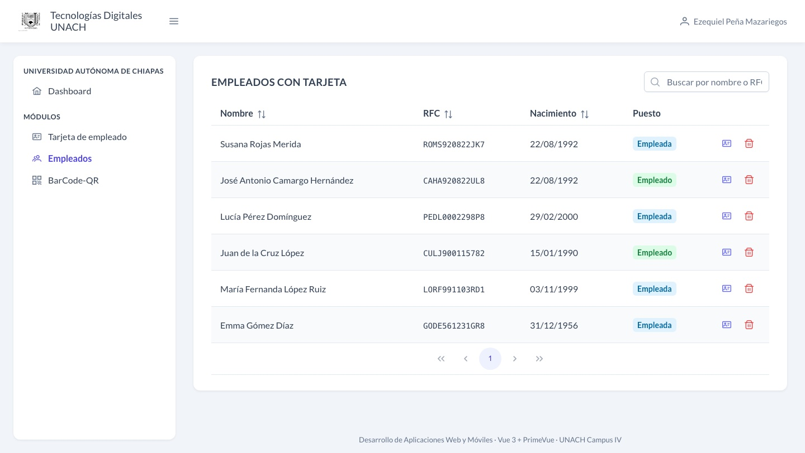
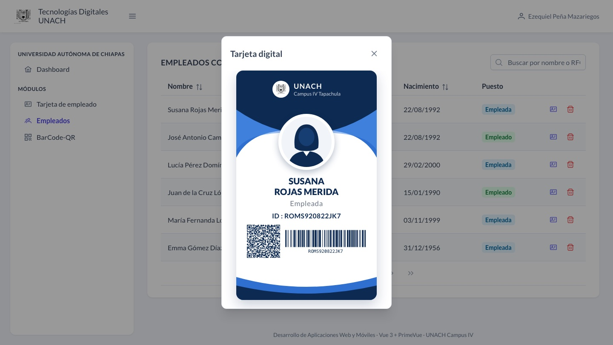
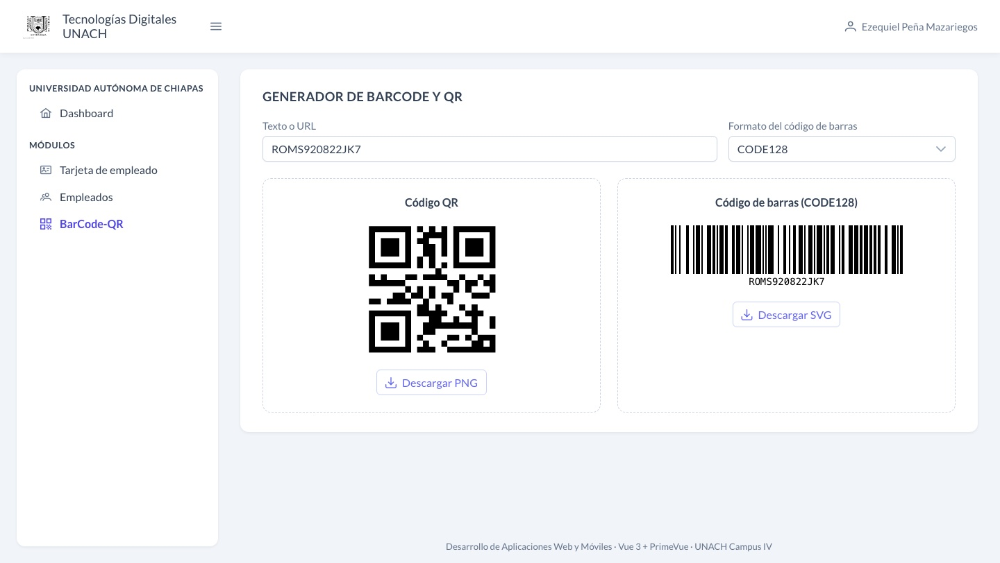
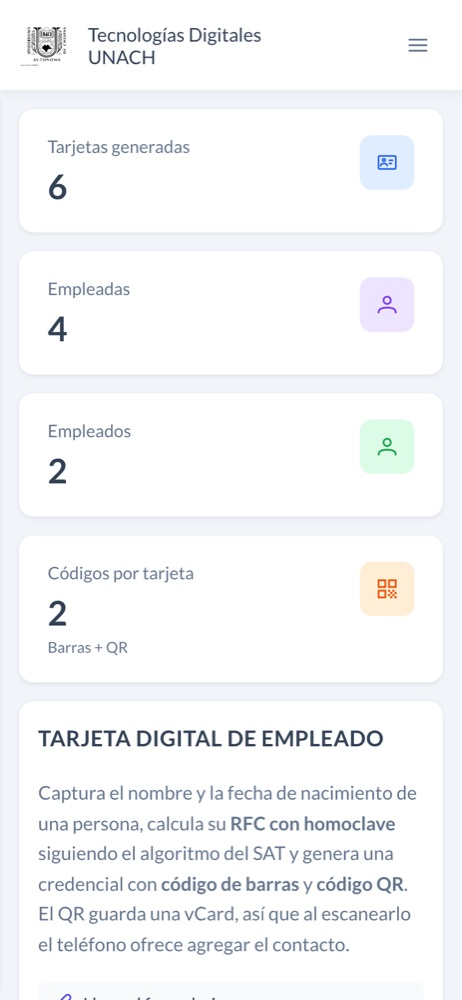
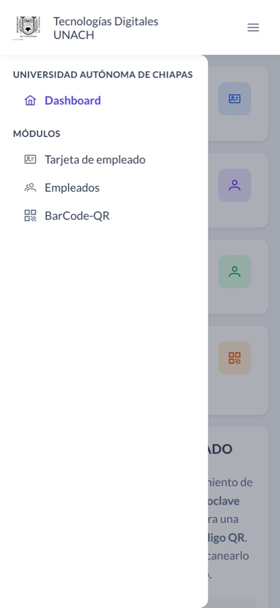
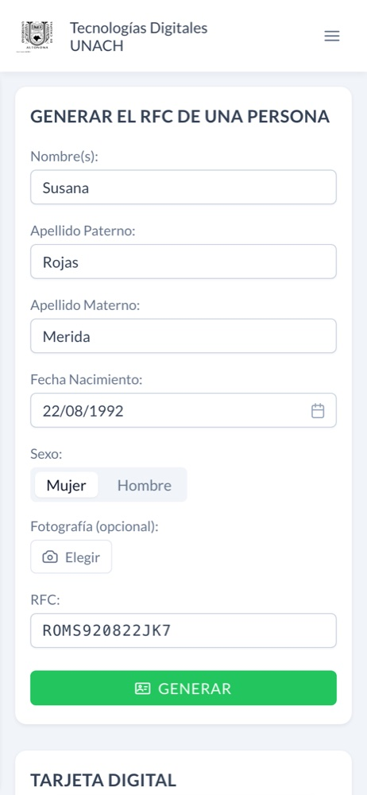
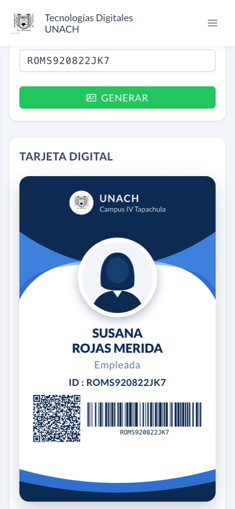

Escuela de Tecnologías Digitales Aplicadas · Campus IV Tapachula
Desarrollo de Aplicaciones Web y Móviles
Práctica 3.1
Tarjeta digital de un Empleado con código QR
Formulario que calcula el RFC y tarjeta digital generada con código de barras y código QR.
Alumno
Ezequiel Peña Mazariegos
Matrícula
100017097
Semestre y grupo
7.º semestre · Grupo A
Docente
Dr. Christian Mauricio Castillo Estrada
Tecnología
Vue 3 + PrimeVue
Dominio (Vercel)
https://tarjeta-empleado-unach.vercel.app
GitHub
https://github.com/Ezequielpm/portafolio-dawm
Tapachula, Chiapas · 8 de noviembre de 2026
1. Problemática y objetivo
En una institución, la credencial de cada trabajador lleva su nombre, su
puesto y un identificador único. En México ese identificador suele ser el
RFC, que se forma con letras del nombre, la fecha de
nacimiento y una homoclave. Calcularlo a mano y luego diseñar la credencial es
lento y fácil de equivocar: un artículo mal quitado del apellido o una letra
equivocada producen un RFC distinto.
El objetivo fue construir, con Vue 3 y PrimeVue, una
interfaz que siga el mockup de la práctica: capturar los datos de una persona,
calcular su RFC con homoclave y generar su tarjeta
digital de empleado con código de barras y código QR, y publicarla en
un dominio gratuito.
Vue 3.5 con componentes de archivo único y <script setup>; el estado de los formularios usa reactive y ref.
Componentes de UI
PrimeVue 4.5 con el tema Aura (color primario índigo, como el mockup): InputText, DatePicker, SelectButton, Select, Button, Message, Toast, DataTable, Dialog, Tag, IconField y PrimeIcons.
Navegación
Vue Router 4 con historial por hash (#/ruta). Las vistas, salvo el Dashboard, se cargan bajo demanda.
Códigos
JsBarcode (código de barras en SVG) y qrcode (código QR como imagen).
Herramientas
Vite 8 para el servidor de desarrollo y la compilación; publicación en Vercel.
src/
├── main.js PrimeVue, tema Aura, idioma español y router
├── router.js 4 rutas: #/ #/formEmpleados #/empleados #/barcode-qr
├── layout/AppLayout.vue barra superior, botón ☰ y menú lateral
├── components/TarjetaDigital.vue la credencial: foto, nombre, puesto, RFC, QR y barras
├── composables/useEmpleados.js lista de tarjetas compartida entre vistas (localStorage)
├── utils/rfc.js cálculo del RFC (sin dependencias de Vue)
└── views/ Dashboard, FormEmpleados, Empleados y BarcodeQr
La tarjeta es un componente que recibe al empleado como prop, así
que la misma credencial aparece en el formulario y en el diálogo de la tabla.
Las tarjetas generadas viven en el composableuseEmpleados: el Dashboard, el formulario y la tabla leen la misma
lista, que se guarda en localStorage para no perderla al recargar.
Si se genera dos veces el mismo RFC, se actualiza el registro en lugar de
duplicarlo. El historial por hash permite publicar el sitio en
cualquier hosting estático sin configurar redirecciones.
Se usó PrimeVue 4.5 porque tiene licencia MIT. PrimeVue 5 pasó a una
licencia comercial (PrimeUI License) y, sin una clave registrada,
muestra un aviso sobre la página.
4. Cálculo del RFC
El archivo utils/rfc.js sigue el instructivo del SAT para
personas físicas. El RFC tiene 13 caracteres en cuatro partes; la tabla las
muestra con el ejemplo de la tarjeta (Susana Rojas Merida, 22/08/1992):
Parte
Regla
Ejemplo
4 letras
Primera letra y primera vocal interna del apellido paterno, primera letra del materno y primera del nombre.
ROMS
Fecha
Fecha de nacimiento en formato AAMMDD.
920822
Homoclave
Cada carácter del nombre completo se cambia por dos dígitos (espacio = 00, A–I = 11–19, J–R = 21–29, S–Z = 32–39). Se suman los productos de cada par de dígitos consecutivos por el segundo dígito; los tres últimos dígitos de la suma se dividen entre 34, y el cociente y el residuo indican dos caracteres de la tabla del SAT.
JK
Verificador
Los 12 caracteres anteriores se multiplican por pesos del 13 al 2 y se suman; el dígito es 11 menos el residuo entre 11 (0 si el residuo es 0, A si resulta 10).
7
Antes de tomar las letras se limpian los textos: mayúsculas, sin acentos y
sin signos. El código también cubre las excepciones del instructivo:
Se quitan artículos y preposiciones de los apellidos y nombres (DE, LA, DEL, LOS, MC, VAN, Y…).
Si la persona tiene más de un nombre y el primero es JOSÉ o MARÍA, se usa el segundo.
Con un solo apellido se toman dos letras del apellido y dos del nombre; si el paterno tiene una o dos letras, se usa su primera letra, la del materno y dos del nombre.
Si las cuatro letras forman una palabra altisonante de la lista del SAT, la última se cambia por X.
El resultado se comprobó con el ejemplo oficial del instructivo: Emma Gómez
Díaz, nacida el 31/12/1956, tiene el RFC GODE561231GR8, y el
programa produce exactamente ese valor.
5. Funcionalidades
5.1 Dashboard
Es la vista de inicio. Muestra cuántas tarjetas se han generado, cuántas
son de empleadas y cuántas de empleados, y las cinco más recientes con su RFC.
El panel de bienvenida explica el flujo y lleva al formulario con
Generar una tarjeta.
Figura 1. Dashboard en la versión publicada, con seis tarjetas generadas.
5.2 Tarjeta de empleado
Es la vista del mockup: el formulario Generar el RFC de una persona
a la izquierda y la Tarjeta digital a la derecha. El formulario pide
nombre(s), apellidos, fecha de nacimiento (DatePicker en español, sin fechas
futuras), sexo y una fotografía opcional. Al presionar
GENERAR se valida, se calcula el RFC y se arma la tarjeta con
la foto o una silueta, el nombre, el puesto (Empleada o Empleado según el
sexo), el RFC como ID, el código QR y el código de barras. Un toast
confirma la operación.
La fotografía se recorta en cuadrado y se reduce a 300 px con un
<canvas>, para que quepa en localStorage. Si
falta un dato o lleva números, el campo se marca en rojo con un mensaje de
PrimeVue (figura 3) y no se genera la tarjeta.
Figura 2. Tarjeta generada para Susana Rojas Merida.

Figura 3. Campos vacíos y un número en el apellido materno.
5.3 Empleados
Una DataTable reúne todas las tarjetas generadas, con ordenamiento por
columna, búsqueda por nombre o RFC y paginación de ocho filas. El puesto se
muestra como etiqueta de color. El botón de credencial abre la tarjeta en un
diálogo, y el de basura la elimina de la lista.

Figura 4. Tabla de empleados con búsqueda y orden.

Figura 5. Tarjeta abierta en un diálogo.
5.4 BarCode-QR
Un generador libre: lo que se escribe en el campo se convierte al instante
en un código QR y en un código de barras del formato elegido (CODE128, CODE39,
EAN13, UPC o ITF14). El QR se descarga en PNG y el código de barras en SVG.
Si el texto no es válido para el formato (por ejemplo, letras en EAN13), se
avisa en lugar de dibujar un código incorrecto.

Figura 6. Generador con el RFC de la figura 2 en CODE128.
5.5 Diseño responsivo
Por debajo de 992 px el menú lateral se oculta y se abre con el botón ☰
como menú deslizable sobre un velo. Por debajo de 1200 px el formulario y la
tarjeta se apilan, y por debajo de 520 px los indicadores quedan en una sola
columna. Las figuras 7 a 10 son de la versión publicada a 390 px de ancho.

Figura 7. Dashboard.

Figura 8. Menú abierto con ☰.

Figura 9. Formulario.

Figura 10. Tarjeta generada.
6. Códigos de barras y QR
El código de barras lleva el RFC en formato CODE128, que
admite letras y números y es el más compacto para un texto de 13 caracteres.
JsBarcode lo dibuja dentro de un <svg>, así que se ve nítido
a cualquier tamaño.
El código QR no guarda solo el RFC: guarda una
vCard (tarjeta de contacto), con corrección de errores nivel
M. Al escanearlo con la cámara del celular, el teléfono reconoce el formato y
ofrece agregar el contacto. Para la tarjeta de la figura 2 contiene:
El cálculo del RFC se probó con Node directamente sobre
utils/rfc.js; el resto, sobre la versión publicada en Vercel, a
1440 px y a 390 px de ancho:
Prueba
Resultado
Emma Gómez Díaz, 31/12/1956 (ejemplo del SAT)
GODE561231GR8, igual al oficial
Susana Rojas Merida, 22/08/1992
ROMS920822JK7
José Antonio Camargo Hernández
CAHA920822UL8: se omite JOSÉ
María Fernanda López Ruiz / María López Ruiz
LORF… / LORM…: MARÍA solo se omite si hay otro nombre
Juan de la Cruz López
CULJ900115782: se quitan DE y LA
Ana Ruiz (sin apellido materno)
RUAN850310MX8: dos letras del apellido y dos del nombre
Óscar Puente Tovar (formaría una palabra altisonante)
PUTX8805123U9: la cuarta letra cambia a X
Lucía Pérez Domínguez, 29/02/2000
PEDL0002298P8: acentos y año bisiesto correctos
Nombre y paterno vacíos, número en el materno
Tres mensajes en sus campos y aviso «Revisa el formulario»
Generar dos veces la misma persona
Se actualiza la tarjeta; el total sigue en 6
Recargar la página
Dashboard y tabla conservan las tarjetas
Las cuatro vistas a 390 px
Sin desbordamiento horizontal
Las pruebas en celular encontraron dos fallas que se corrigieron antes de
la entrega: a 390 px los paneles del Dashboard se salían 17 px de la pantalla
(la columna de la rejilla crecía con el nombre más largo) y las iniciales de
«Juan de la Cruz» aparecían como «Jd».
8. Conclusiones
La aplicación cumple lo que pide la práctica: reproduce el mockup, calcula
el RFC con homoclave y dígito verificador según el SAT, y genera la tarjeta
digital con código de barras y un QR que el celular puede guardar como
contacto. Además agrega un Dashboard, la tabla de empleados y un generador
libre de códigos.
Vue permitió dividir la interfaz en piezas reutilizables: la misma tarjeta
sirve en el formulario y en el diálogo, y un composable comparte la
lista entre vistas sin una librería de estado. PrimeVue aportó componentes
listos (selector de fecha, mensajes de validación, tabla con filtros), lo que
dejó el esfuerzo en la lógica del RFC, que es la parte más delicada. Separar
esa lógica en un archivo sin Vue facilitó probarla por su cuenta contra el
ejemplo oficial del SAT.